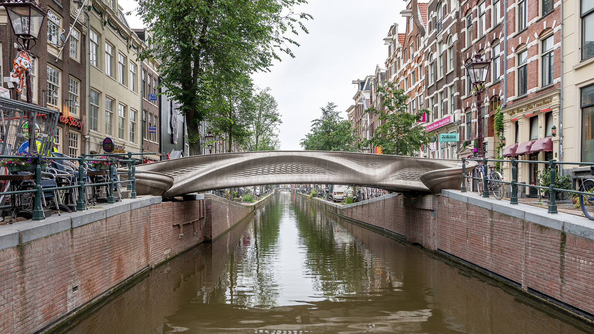

Media
The Alan Turing Institute · Three-part documentary
A week in the life of a Data Study Group
I took part in a Data Study Group at The Alan Turing Institute. This three-part series follows researchers and the organisations they work with as they tackle a data science problem and present their findings.

The Alan Turing Institute · Featured article
Twinning ways: how digital twins will change our world for the better
This article mentions my work on building computational tools that bring together computer simulations and sensor data to better understand how Amsterdam’s 3D-printed steel bridge behaves.
Read the article